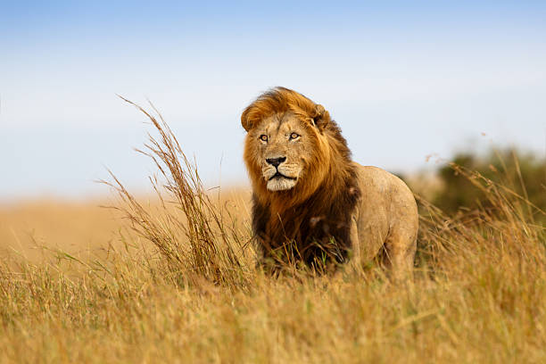

Leones
. Leones asiáticos
. Leones africanos
El León, os voy a hablar sobre los leones y sus tipos porque es mi animal favorito.

Información física sobre los leones
- Los leones son grandes animales cuadrúpedos con pelaje de color dorado o beige claro, que pueden alcanzar un peso entre 160 y 260 kg para los machos y entre 120 y 182 kg para las hembras.
- Tienen una longitud de unos tres metros, de cabeza a la punta de la cola. Su habilidad para la caza.
- El león es uno de los cuatro grandes félidos pertenecientes al género Panthera./li>
Información general sobre los leones
- Los leones son muy ágiles y rápidos a la hora de cazar. Su fortaleza física les permite abalanzarse sobre sus presas aferrándolas con las garras de sus patas delanteras. Luego muerden el cuello de la presa hasta lograr la asfixia o el desangramiento.
- Los leones son depredadores, no domesticables, que pueden ingerir hasta 7 kilos de carne al día.
- Los leones tienen una gran capacidad de vocalización y pueden realizar el rugido más intenso de todas las especies de felinos del mundo.